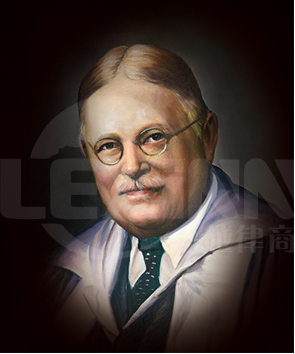

罗斯科·庞德
罗斯科·庞德（Roscoe Pound，1870——1964），美国20世纪著名法学家。他所代表的社会学法学长期来在美国法学中占有主导地位。 庞德1870年出生于美国内布拉斯加州，曾任律师、内布拉斯加州最高法院上诉委员会委员、内布拉斯加大学法学院院长，1907年起先后在西北大学、芝加哥大学和哈佛大学执教，1916年起任哈佛大学法学院院长达20年之久。第二次世界大战后曾任中华民国时期国民党政府司法部和教育部顾问。
庞德主要著作有《社会学法学的范围和目的》（1911～1912）、《法哲学导论》(1922)、《法制史阐述》(1923)、《法和道德》（1924）、《通过法律的社会控制》（1942）、《法的任务》(1944)、《正义来自法律》(1951)和《法理学》（5卷集，1959）。最后一书是他过去著作的概述。庞德学说的思想渊源主要是实用主义哲学、美国L.F.沃德(1841～1913)和E.A.罗斯(1866～1951)的社会学以及R.von耶林的新功利主义法学。他在《社会学法学的范围和目的》中曾提出社会学法学派的6点纲领,以后又扩大为下列8点：（一）研究法律制度、规则和学说的实际社会效果；（二）为立法准备而进行社会学的研究；（三）研究使法律规则发生实效的手段；（四）研究法律方法：对司法、行政和立法等活动进行心理学研究以及对理想进行哲学研究；（五）对法律史进行社会学的研究；（六）重视对法律规则的个别适用，即合理和公平地解决每一案件；（七）在普通法系国家设立司法部的作用应主要在于研究法律的作用；（八）以上各点宗旨都在于使法律目的更有效地实现。从强调实现法的目的、法的效果这一前提出发，庞德认为法是一种社会工程，一种社会控制的工具。法的目的和任务在于最大限度地满足、调和相互冲突的利益。利益是法律保护的基本因素，权利是法律上被保护的利益。为了实现这些任务，就必须正确地对各种利益进行分类：（一）个人利益，其中又包括人格、家庭关系和物质三方面的利益；（二）公共利益，包括国家作为法人在维护其人格和物质方面以及作为社会利益捍卫者的利益；（三）社会利益，其中包括一般安全、社会组织安全、一般道德、社会资源以及个人生活等各方面的社会利益。
由于法的目的和任务在于调和相互冲突的利益，就必须对这些利益进行评价，从而也就要有借以评价的价值准则。庞德在20世纪初曾提出文明社会在私法方面的五个方面的法律前提，主要是关于保护人身财产安全、所有权、履行契约义务和过失行为责任；在40年代,他又补充了有关劳动和其他社会立法的三个方面的前提；他认为20世纪法的理想图画是：一方面促进个人主动精神，另一方面实现社会合作。
庞德认为法的发展经历了如下五个阶段：原始的法、严格的法、衡平法和自然法、成熟的法、社会化的法。在1959年的《法理学》一书中，他又补充了一个论点：下一阶段的法是世界法。早在1947年，他就呼吁建立"新的万民法"或"世界范围的法律秩序"。
展开 »